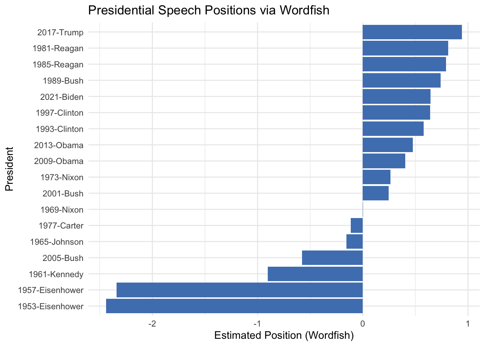

See https://quanteda.io for tutorials and examples.
library(quanteda.textmodels)library(quanteda.textplots)library(readr)library(ggplot2)# Twitter data about President Biden and Xi summit in Novemeber 2021# Do some background search/study on the event# summit <-read_csv("https://raw.githubusercontent.com/datageneration/datamethods/master/textanalytics/summit_11162021.csv")
Rows: 14520 Columns: 90
── Column specification ────────────────────────────────────────────────────────
Delimiter: ","
chr (50): screen_name, text, source, reply_to_screen_name, hashtags, symbol...
dbl (26): user_id, status_id, display_text_width, reply_to_status_id, reply...
lgl (10): is_quote, is_retweet, quote_count, reply_count, ext_media_type, q...
dttm (4): created_at, quoted_created_at, retweet_created_at, account_create...
ℹ Use `spec()` to retrieve the full column specification for this data.
ℹ Specify the column types or set `show_col_types = FALSE` to quiet this message.
The Biden–Xi summit data reveals distinct clusters of conversation around human rights and geopolitical tension. Hashtags like #uyghurs, #fentanyl, and #taiwan are tightly linked to #china, suggesting that topics like human rights abuses, drug trade, and territorial sovereignty were central to online discourse surrounding the summit.
US presidential inaugural speeches
# Locate keywords-in-contextdata_corpus_inaugural_subset <-corpus_subset(data_corpus_inaugural, Year >1949)kwic(tokens(data_corpus_inaugural_subset), pattern ="american") %>%textplot_xray()
Any similarities and differences over time and among presidents?
Looks like most presidents consistently used the word “people,” showing it’s a go-to way to connect with the public. But words like “trade” barely show up and only pop in during a few speeches, mostly from Reagan, Clinton, and Trumpm so it’s clearly not a top priority for everyone.
What is Wordfish?
Wordfish is a text scaling algorithm used in political science and computational social science to estimate latent positions of actors based on the word frequencies in their texts. It assumes that word usage varies systematically with political position and applies a statistical model to uncover a one-dimensional scale from the textual data without needing predefined categories.
# Create a dfm from the inaugural subsetdfm_inaug <-tokens(data_corpus_inaugural_subset, remove_punct =TRUE) %>%tokens_tolower() %>%tokens_remove(stopwords("en")) %>%dfm()# Optional: trim sparse words to reduce noisedfm_inaug_trim <-dfm_trim(dfm_inaug, min_termfreq =5)# Run Wordfish scalingwordfish_model <-textmodel_wordfish(dfm_inaug_trim, dir =c(1, nrow(dfm_inaug_trim)))# View estimated positions (theta scores)head(wordfish_model$theta)
# Plot the positions with ggplot2wf_df <-data.frame(President =docnames(dfm_inaug_trim),Position = wordfish_model$theta)ggplot(wf_df, aes(x =reorder(President, Position), y = Position)) +geom_col(fill ="#4F81BD") +coord_flip() +xlab("President") +ylab("Estimated Position (Wordfish)") +ggtitle("Presidential Speech Positions via Wordfish") +theme_minimal()

How to compare positions?
To compare positions, you can apply scaling methods like Wordfish or Wordshoal in quanteda, which place documents or speakers on an inferred ideological or policy spectrum. These methods work by analyzing differences in word usage across documents and estimating relative positions based on how discriminative certain words are, allowing you to visualize shifts in tone, ideology, or topic emphasis between individuals, parties, or time periods.
Create a corpus using government documents selected from the govinfo.gov website (usesample program govtdata01.R)
# --- Part 0: Load Libraries & Setup ---# Make sure these are installed: install.packages(c("quanteda", "quanteda.textmodels", "quanteda.textstats", "quanteda.textplots", "readtext", "purrr", "magrittr", "jsonlite", "dplyr", "data.table"))# For text analysislibrary(quanteda)library(quanteda.textmodels)library(quanteda.textstats)library(quanteda.textplots)library(readtext) # For reading PDFs
Attaching package: 'readtext'
The following object is masked from 'package:quanteda':
texts
# For data handling and downloading (from your script)library(purrr)library(magrittr)
Attaching package: 'magrittr'
The following object is masked from 'package:purrr':
set_names
library(jsonlite)
Attaching package: 'jsonlite'
The following object is masked from 'package:purrr':
flatten
library(dplyr)
Attaching package: 'dplyr'
The following objects are masked from 'package:stats':
filter, lag
The following objects are masked from 'package:base':
intersect, setdiff, setequal, union
library(data.table)
Attaching package: 'data.table'
The following objects are masked from 'package:dplyr':
between, first, last
The following object is masked from 'package:purrr':
transpose
# --- Part 1: Configuration - USER NEEDS TO SET THESE ---# 1.1 Set your working directory (where your R script and downloaded_pdfs folder are)# Replace "your/path/to/EPPS6323_Assign4" with your actual path# Example for Windows: setwd("C:/Users/YourName/Documents/EPPS6323_Assign4")# Example for Mac/Linux: setwd("/Users/YourName/Documents/EPPS6323_Assign4")# setwd("your/path/to/EPPS6323_Assign4") # IMPORTANT: Uncomment and set this!if (getwd() =="/") { # A simple check if you're in the root, likely not intendedstop("Please set your working directory using setwd() before proceeding.")}print(paste("Current working directory:", getwd()))
[1] "Current working directory: /Users/olivermyers/MyWebsite/pages/EPPS_6323/Assignment04"
# 1.2 Path to the JSON metadata file you downloaded from GovInfo# OR the direct URL to the JSON if GovInfo provided one.# If you downloaded the file, put it in your working directory.# Example: json_metadata_file_path <- "govinfo-search-results-foreign-affairs.json"# Example: json_metadata_url <- "https_some_direct_url_from_govinfo.json" # Less common for search resultsjson_metadata_file_path <-"YOUR_JSON_METADATA_FILE.json"# <--- !!! REPLACE THIS !!! # For demonstration, I'll use the one from your script, but you should get your own for the specific search# For this example to run out-of-the-box for others, let's use the GitHub URL from your sample.# IN YOUR ACTUAL ASSIGNMENT, USE THE JSON FROM YOUR SPECIFIC GovInfo SEARCH.json_metadata_url <-"https://github.com/datageneration/datamethods/raw/refs/heads/master/webdata/govinfo-search-results-2024-10-13T07_18_29.json"print(paste("Using JSON metadata from:", json_metadata_url))
# 1.3 Directory to save the downloaded PDFs# This should be a subfolder within your working directory.save_dir <-file.path(getwd(), "downloaded_pdfs")if (!dir.exists(save_dir)) {dir.create(save_dir, recursive =TRUE)print(paste("Created directory:", save_dir))} else {print(paste("Save directory already exists:", save_dir))}
# 1.4 Number of documents to download (keep it small for testing, e.g., 3-5)num_docs_to_download <-3# --- Part 2: Load Metadata (Adapted from govtdata01.R) ---message("Loading JSON metadata...")
Loading JSON metadata...
# Try reading from URL first, then from local file if path was given for localif (exists("json_metadata_url") &&startsWith(json_metadata_url, "http")) { gf_list1 <- jsonlite::read_json(json_metadata_url)} elseif (exists("json_metadata_file_path") &&file.exists(json_metadata_file_path)) { gf_list1 <- jsonlite::read_json(json_metadata_file_path)} else {stop("Please provide a valid json_metadata_url or json_metadata_file_path.")}# Extract the list of documentsgovfiles_df <- gf_list1$resultSet |> dplyr::bind_rows()if (nrow(govfiles_df) ==0) {stop("No documents found in the JSON metadata. Check your JSON file/URL or search query on GovInfo.")}print(paste("Loaded metadata for", nrow(govfiles_df), "documents."))
[1] "Loaded metadata for 1000 documents."
# head(govfiles_df) # (e.g., title, packageId, pdfLink, lastModified, dateIssued)# --- Part 3: Prepare for Bulk Download (Adapted from govtdata01.R) ---# Ensure the necessary columns existif (!"pdfLink"%in%names(govfiles_df) ||!"packageId"%in%names(govfiles_df)) {stop("The JSON metadata does not contain 'pdfLink' or 'packageId'. Check the structure. Available columns: ", paste(names(govfiles_df), collapse=", "))}pdf_govfiles_url <- govfiles_df$pdfLink# Use packageId for a unique, meaningful ID. If not present, use row index.if ("packageId"%in%names(govfiles_df)) { pdf_govfiles_id <- govfiles_df$packageId } else {# Fallback if packageId is missing, though it's usually there.# Using row number as ID might lead to less descriptive filenames. pdf_govfiles_id <-1:nrow(govfiles_df)warning("packageId not found in metadata, using row index as ID.")}# Trim to the number of documents we want to downloadif (nrow(govfiles_df) < num_docs_to_download) {warning(paste("Requested to download", num_docs_to_download, "but only", nrow(govfiles_df), "are available. Downloading all available.")) num_docs_to_download <-nrow(govfiles_df)}pdf_govfiles_url_subset <-head(pdf_govfiles_url, num_docs_to_download)pdf_govfiles_id_subset <-head(pdf_govfiles_id, num_docs_to_download)govfiles_df_subset <-head(govfiles_df, num_docs_to_download)# --- Part 4: Download PDFs (Adapted from govtdata01.R) ---# Function to download pdfsdownload_govfiles_pdf <-function(url, id, save_directory) {tryCatch({# Sanitize id to make it a valid filename component# Replace non-alphanumeric characters (except hyphen and underscore) with underscore sanitized_id <-gsub("[^a-zA-Z0-9_-]", "_", id) destfile <-file.path(save_directory, paste0("govfile_", sanitized_id, ".pdf"))# Check if file already exists to avoid re-downloading (optional)if (file.exists(destfile)) {return(paste("File already exists (skipped):", destfile)) }download.file(url, destfile = destfile, mode ="wb") # Binary filesSys.sleep(runif(1, 1, 3)) # Important: random sleepreturn(paste("Successfully downloaded:", destfile)) },error =function(e) {return(paste("Failed to download from:", url, "Error:", e$message)) })}message(paste("Starting downloads of", num_docs_to_download, "PDFs to", save_dir, "..."))
Starting downloads of 3 PDFs to /Users/olivermyers/MyWebsite/pages/EPPS_6323/Assignment04/downloaded_pdfs ...
start.time <-Sys.time()# Use mapply for iterating over two lists (url and id) simultaneously# purrr::map2_chr is also a good alternativedownload_results <-mapply(download_govfiles_pdf, pdf_govfiles_url_subset, pdf_govfiles_id_subset,MoreArgs =list(save_directory = save_dir),SIMPLIFY =TRUE,USE.NAMES =FALSE)end.time <-Sys.time()time.taken <- end.time - start.timemessage("Finished downloads.")
# --- Part 5: Read Downloaded PDFs into R using readtext ---message("Reading downloaded PDFs into R...")
Reading downloaded PDFs into R...
# List all PDF files in the save_dirpdf_files_to_read <-list.files(path = save_dir, pattern ="\\.pdf$", full.names =TRUE)if (length(pdf_files_to_read) ==0) {stop("No PDF files found in the download directory. Check download step.")}# Read the text from PDF files# This can take some time, and PDF text extraction quality varies.# readtext uses pdftools::pdf_text internally for PDFs.# We will use the packageId as the doc_id for better linking with metadata# We need to extract the ID from the filename to match with our metadatadoc_ids_from_filenames <-gsub("govfile_ Tuttavia_ Tuttavia_ Tuttavia_ Tuttavia_|.pdf", "", basename(pdf_files_to_read))# doc_ids_from_filenames should now match pdf_govfiles_id_subset (after sanitization in download function)# To ensure correct doc_id assignment, let's build it more robustly# We know which IDs we attempted to download: pdf_govfiles_id_subset# We can construct the expected filenamesexpected_filenames_base <-paste0("govfile_", gsub("[^a-zA-Z0-9_-]", "_", pdf_govfiles_id_subset), ".pdf")expected_fullpaths <-file.path(save_dir, expected_filenames_base)# Filter for only those files that were actually downloaded and existactual_files_to_read <- expected_fullpaths[file.exists(expected_fullpaths)]actual_ids_for_corpus <- pdf_govfiles_id_subset[file.exists(expected_fullpaths)]govfiles_df_for_corpus <- govfiles_df_subset[file.exists(expected_fullpaths), ]if (length(actual_files_to_read) >0) { gov_texts <-readtext(actual_files_to_read, docvarsfrom ="filenames", # we'll add proper docvars laterdocnames = actual_ids_for_corpus) # Use our original IDsprint(paste("Successfully read", nrow(gov_texts), "PDF files."))# print(head(gov_texts)) # Display first few characters of each document} else {stop("No PDF files were successfully downloaded or found to read.")}
[1] "Successfully read 3 PDF files."
# --- Part 6: Create a quanteda Corpus ---message("Creating quanteda corpus...")
Creating quanteda corpus...
# The 'text' column from readtext output contains the textgov_corpus <-corpus(gov_texts) # text_field = "text" is default# Add document variables (docvars) from our metadata# Make sure the order of govfiles_df_for_corpus matches the order of documents in gov_corpus# Since we used actual_ids_for_corpus for docnames, we can match on that.# docnames(gov_corpus) should be the same as actual_ids_for_corpus# Select relevant columns from govfiles_df_for_corpus to be docvars# Common useful docvars: title, dateIssued, packageId (which is already docname)# Ensure packageId is a column in govfiles_df_for_corpus if you want to use it for mergingif (!"packageId"%in%names(govfiles_df_for_corpus)) { govfiles_df_for_corpus$packageId <- actual_ids_for_corpus # Add it if missing}# Ensure govfiles_df_for_corpus docvars are aligned with corpus docnamesdocvars_to_add <- govfiles_df_for_corpus[match(docnames(gov_corpus), govfiles_df_for_corpus$packageId), ]# Add all columns from docvars_to_add as document variables# Exclude 'text' if it accidentally got in there, and packageId if we want to keep docnames unique# Also exclude pdfLink, etc. that might not be directly useful as docvars.cols_for_docvars <-c("title", "granuleClass", "lastModified", "dateIssued", "branch", "suDocClassNumber", "governmentAuthor1", "pages")# Keep only columns that actually exist in docvars_to_addcols_for_docvars <-intersect(names(docvars_to_add), cols_for_docvars)if (length(cols_for_docvars) >0) {docvars(gov_corpus) <-cbind(docvars(gov_corpus), docvars_to_add[, cols_for_docvars, drop =FALSE])}# Display corpus summaryprint(summary(gov_corpus, n = num_docs_to_download)) # Show summary for all downloaded docs
Corpus consisting of 3 documents, showing 3 documents:
Text Types Tokens Sentences docvar1
govfile_BILLS-118sjres114is.pdf 291 625 12 govfile
govfile_BILLS-118sres805ats.pdf 559 1631 16 govfile
govfile_BILLS-118sres890is.pdf 333 884 14 govfile
docvar2 title
BILLS-118sjres114is <NA>
BILLS-118sres805ats <NA>
BILLS-118sres890is <NA>
print(paste("Corpus created with", ndoc(gov_corpus), "documents."))
[1] "Corpus created with 3 documents."
# You can now proceed with further analysis using this 'gov_corpus' object# For example:# gov_dfm <- dfm(tokens(gov_corpus, remove_punct = TRUE, remove_numbers = TRUE) %>%# tokens_remove(stopwords("en")))# print(gov_dfm[, 1:10])message("Assignment 6 task (corpus creation) complete.")
Assignment 6 task (corpus creation) complete.
message("The corpus object is named 'gov_corpus'.")